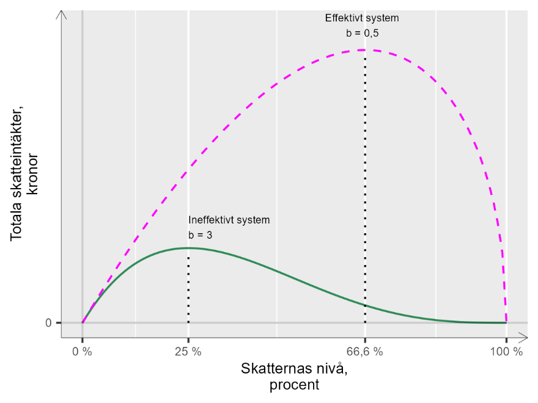

18 Hur höga skatter vill vi ha?
18.0.1 Begrepp
- Skattekvot, skattenivå, skattetryck: Totala mängden skatteintäkter dividerat med BNP. Olika begrepp brukar användas för att beskriva samma fenomen.
-
Lafferkurvan: En kurva som beskriver tänkbara teoretiska samband mellan totala skattenivån i samhället och skatteintäkterna. Grundläggande teorier beskriver ofta kurvan som att högre skatter ökar skatteintäkterna, men ju högre skatter, desto mindre vill folk arbeta - vilket påverkar skatteintäkterna negativt.
### Teori
En stor mängd samhällsvetenskap handlar om skatter och hur de påverkar människors liv. Ett känt exempel är den så kallade Lafferkurvan, uppkallad efter den amerikanske nationalekonomen Arthur Laffer. Liknande teorier inom samhällsvetenskap kan spåras tillbaka till åtminstone 1400-talet.
### Ett påhittat land
Vi börjar med att tänka oss att vi har ett samhälle utan skatter. Matematiken i detta avsnitt är lånad och inspirerad av \[[lundberg2017thelaffer](#LyXCite-lundberg2017thelaffer)\]
Folk arbetar och producerar varor och tjänster som köps och säljs. Totala inkomsterna i samhället kallar vi för y, vars värde ej är avgörande för exemplet.
Nu vill regeringen införa en skatt som ska sättas som en procentsats på alla inkomster och kallas för t. Skatten t kan vara ett värde mellan 0 och 1, mellan 0 och 100 %. Statens totala skatteintäkter, i, kan då beräknas till:
\(i = ty\) (1)
Om alla inkomster i samhället summerar till 1 000 kr och skatten är 5 % blir statens skatteintäkter i = \(ty = 1000*0,05 = 50\ kr\). De inkomster som beskattas, y, kallas även för skattebasen.
Skatten påverkar människors vilja att arbeta och betala skatt. Ju högre skatten blir, desto mindre vill människor arbeta, vilket i sin tur drar ned statens skatteintäkter. Denna mekanism vill vi ta hänsyn till i vår ekvation över skatteintäkterna. Vi skriver därför om ekvation 1 så att vi i stället får följande uttryck:
\(i = ty(1 - t)^{b}\) (2)
Bokstaven b anger hur människorna i samhället reagerar på en skattehöjning, vilket även kallas för skattebaselasticitet. Om b är 0 arbetar människor exakt lika mycket oavsett hur hög skatten är. Ett högre positivt värde på b innebär att skattehöjningar har en större negativ effekt på människors arbetslust. Ett negativt värde \(b \< 0\) innebär att människor arbetar mer vid högre skatt.
### Lafferkurvan
Ekvation 2 är ett exempel på Lafferkurvan. Från denna ekvation kan vi se att om skatten sätts till 100 % blir t = 1 och i så fall blir skatteintäkterna \(i = 0\). Så om staten vill maximera sina skatteintäkter måste skatten sättas någonstans mellan 0 och 100 %. För att hitta den skattenivå som ger mesta möjliga skatteintäkter kan vi ställa upp detta som ett maximeringsproblem där vi ska beräkna maximum av skatteintäkterna i med hänsyn till skattenivån t:
\(\max_{m.h.t.\ \ t}{i = ty(1 - t)^{b}}\) (3)
För att lösa maximeringsproblemet tar vi derivatan av i med hänsyn till t:
\(i_{t}\' = y(1 - t)^{b} - by(1 - t)^{b - 1}t\) (4)
där vi använder kedjeregeln för derivata. Vi sätter sedan förstaderivatan lika med 0 och löser ut t med hjälp av logaritmering:
\(y(1 - t)^{b} - by(1 - t)^{b - 1}t = 0\) (5)
\(\ln y + b\ln(1 - t) - \ln b - \ln y - \ln t - (b - 1)\ln(1 - t) = 0\)
\({Ln}(1 - t) - \ln t - \ln b = 0\)
\({Ln}\left( \frac{1 - t}{t} \right) = \ln b\)
\(\frac{1}{t} - 1 = b\)
\(t^{*} = \frac{1}{1 + b}\)
Definitionen av \(t^{*}\) i sista raden ger oss ett uttryck för mesta möjliga skatteintäkt, alltså det värde för t som maximerar variabeln i. Mesta möjliga skatteintäkter beror på skattebaselasticiteten b.
### Två olika samhällen
Regeringen i vårt påhittade samhälle vill införa skatt men är osäkra på värdet på b. För att få mer klarhet jämför de med två andra länder. Figur 1 beskriver Lafferkurvorna för dessa två samhällen som representerar två olika samhällstyper. I figuren går båda linjerna mot 0 skatteintäkter då skattenivån närmar sig 100 %, där vi tänker oss att ingen vill betala skatt.
I det första landet fungerar offentlig sektor ineffektivt. Människor har lågt förtroende för det politiska systemet och de skatter som staten tar ut används inte till något som människor har glädje av. Skatterna är utformade på ett krångligt och ineffektivt sätt. Skattebaselasticiteten är i detta fall \(b = 3\). Mesta möjliga skatteintäkter uppnås i detta fall vid en skattenivå på:
\(t(b = 3) = \frac{1}{1 + 3} = 0,25\) (6)
Detta betyder att om staten vill maximera skatteuttaget måste den sätta skatten på 25 %. Alla andra skattenivåer resulterar i mindre totala skatteintäkter.
I diagrammet illustreras detta med den heldragna linjen vid “Ineffektivt system”. Kurvans högsta punkt är vid \(t = 0,25\). Detta innebär att redan vid en relativt låg skattenivå medför ytterligare höjningar av skatten att de totala skatteintäkterna kommer att minska.
Figur 1. Två Lafferkurvor

::: {.fig-caption} Förklaring: De två kurvorna i diagrammet illustrerar två teoretiska samhällsekonomier som fungerar olika. I det ena samhället fungerar samhället på ett sådant sätt att den maximala skattenivån är 66,6 %. I den andra ekonomin är den optimala skattenivån 25 %. Trots att skattenivån är lägre i den andra samhällsekonomin är totala skatteintäkterna mindre på grund av olika ineffektiviteter. I det andra samhället fungerar offentlig sektor relativt väl. Invånarna får för sina skattepengar tillbaka en stor mängd tjänster av god kvalitet och har högt förtroende för det politiska systemet. Skattesystemet är därtill effektivt utformat och enkelt att följa för den som vill. Skattebaselasticiteten är i detta fall \(b = 0,5\) och mesta möjliga skatteintäkter nås vid skattenivån: \(t(b = 0,5) = \frac{1}{1 + 0,5} = \frac{2}{3}\) (7) Uttryckt som procent motsvarar det cirka 66,6 %. I diagrammet beskrivs detta samhälle med den streckade linjen, markerad med “Effektivt system”. Denna linjes högsta punkt är vid \(t = 0,666\). Efter denna nivå kommer en ytterligare skattehöjning medföra att skatteintäkterna börjar minska. Matematiken i detta avsnitt är lånad och inspirerad av Lundberg 2017. Tack till Jacob Lundberg som kommenterade ett tidigare utkast på denna text. Återstående misstag är tyvärr mina egna. :::
Övningar